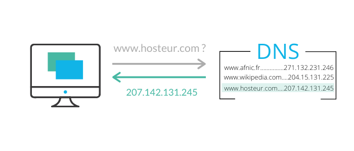

L'histoire d'Internet
Peu après la Seconde Guerre mondiale, nous sommes à la naissance de la micro-informatique. Seules les grandes entreprises pouvaient se doter de matériel informatique. Le seul moyen d'échanger des données de station en station était à travers l'utilisation
de disquettes. Pour un même département, cela ne posait guère de problèmes. Cependant, la chose devenait plus difficile lorsqu'il s'agissait d'un bureau situé a un autre étage, ou dans un autre bâtiment.
Avant la propagation des connexions inter-réseaux qui amena l’Internet actuel, la plupart des réseaux de communication étaient limités à des communications entre les postes d’un même réseau. Quelques réseaux avaient des passerelles ou des ponts les reliant
entre eux, mais la plupart du temps ils étaient limités ou conçus pour un usage unique. Une méthode déjà utilisée dans les réseaux de télécommunication reposait sur un ordinateur central raccordé à ses terminaux via de longues lignes.
L'histoire d'Internet remonte au début des années 1960. En effet, l’idée d’un réseau informatique permettant aux utilisateurs de différents ordinateurs de communiquer se développa par de nombreuses étapes successives.
-
En 1958
Les laboratoires Bell créent le premier modem (un périphérique informatique qui relie un ordinateur à un réseau analogique). Il permet de transmettre des données binaires sur une simple ligne téléphonique. -
En 1961
Leonard Kleinrock publie un premier texte théorique sur la publication des paquets. -
En 1965
Thomas Merill teste pour la première fois une connexion informatique longue distance entre la Californie et le Massachusetts. L'essai est réussi, les ordinateurs travaillent ensemble mais la communication à l'aide du réseau de téléphonie n'est pas adapté. -
En 1967
Première conférence sur ARPANET, le premier réseau à transfert de paquets de données. -
En 1969
Après trois années de développement, ARPANET est officiellement terminé et au point. -
En 1972
Robert Elliot Kahn organise une démonstration très réussie du réseau ARPANET lors de la Conférence internationale sur les communications informatiques. Le courrier électronique est mis au point. Peu à peu, l'application de réception et d'envoie des courriers électroniquess'améliore, et on peut désormais classer, sélectionner et répondre aux messages. -
Dans les années 1970
Alors que le protocole NCP d'Arpanet ne permet pas de communiquer avec des machines hors réseau et ne permet pas non plus de corriger les erreurs de transmission, Kahn met au point un nouveau protocole, le TCP/IP. En même temps en France se développe le projet Cyclades. Par ailleurs, Kahn indique que le protocole TCP/IP est inspiré de ce projet. -
Dans les années 1980
Les années 80 représentent l'émergence des ordinateurs personnels et des stations de travail. Par conséquent, le nombre de sites web disponible augmentait. Cela a donné naissance au DNS (Domain Name System). Auparavant, pour se rendre sur un site Web, les utilisateurs devaient rentrer les adresses IP du serveur (qui hébergeait le site) dans leur navigateur. Cependant, il était difficile de se souvenir de chaque adresse pour chaque site. Paul Mockapetris trouvait ça fastidieux et a créé le DNS. C'est un système qui, à partir d'une adresse Web telle qu'on les connaît, retrouve l'adresse IP d'un site, indispensabl à son accès. Par exemple, lorsque nous taponswww.google.comdans la barre de recherche du navigateur, ce dernier va interroger le serveur DNS pour lui demander à quelle adresse IP correspond l'adresse Webwww.google.com. Schéma représentant le fonctionnement du DNS. -
De nos jours
Aujourd'hui, Internet est accessible de partout, en un temps relativement négligeable. Depuis un téléphone portable, que l'on met dans la poche d'un pantalon, ou même depuis... une montre que l'on a autour du poignet. Internet est avec nous tout le temps, à chaque seconde de notre vie. Comment l'imaginer sans ? Besoin de connaître l'altitude de la montagne qui se situe en face de nous ? Pas de problème, demandons à Google. Besoin de savoir le nombre de m³ d'eau dans le lac de Serre-Ponçon ? Pas de problème, Google a la réponse à notre question. Et si on ne veut pas utiliser Google pour des raisons de confidentialité, aucun problème, des milliers d'alternatives sont à notre disposition. Mais voilà. Qui dit omniprésence dit problème de confidentialité. Et cela a mené à bien des conflits entre les utilisateurs, les concernés, les autorités, etc. Et l'éthique n'est pas toujours de la partie. Peut-être que, pour que le monde numérique soit meilleur encore faudrait-il qu'il soit exposé à moins de tensions.